- ALL
- BEACHES
- CAVE
- FALLS & RIVER
- MOUNTAIN VIEW
- CHURCHES
- OTHERS

Alona Beach

Alicia Panoramic View
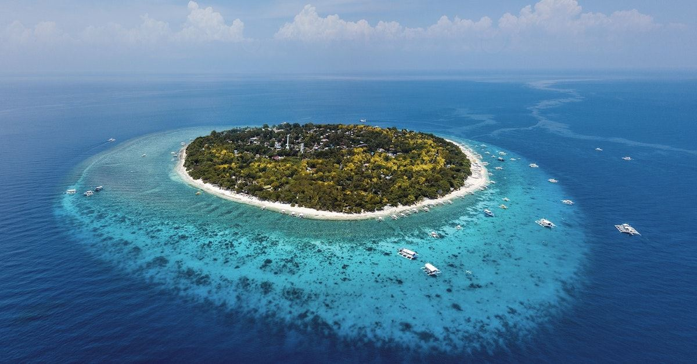
Balicasag Island
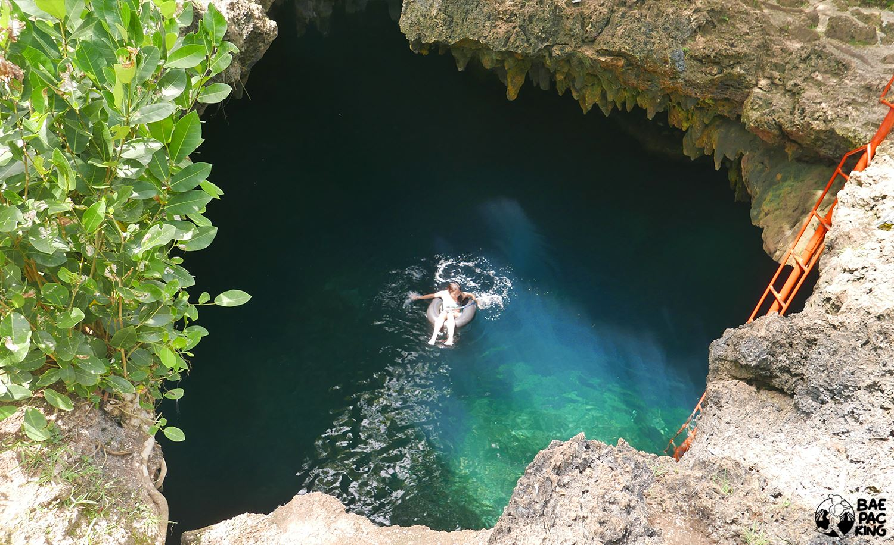
Cabognaw Cave Pool

Cadapdapan Rice Terraces
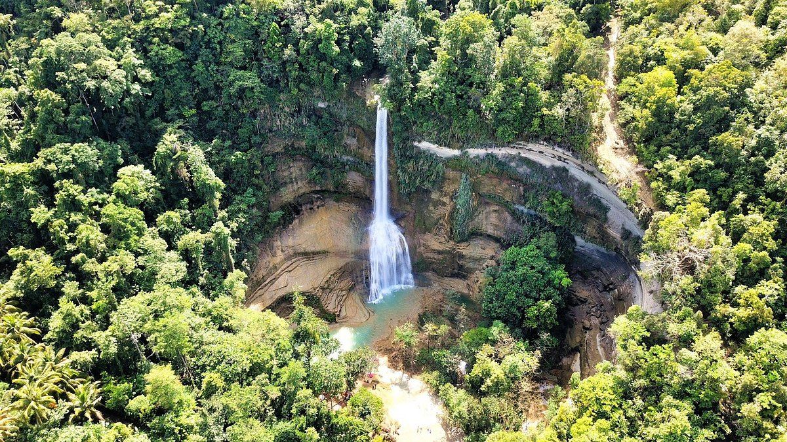
Can-umantad Falls
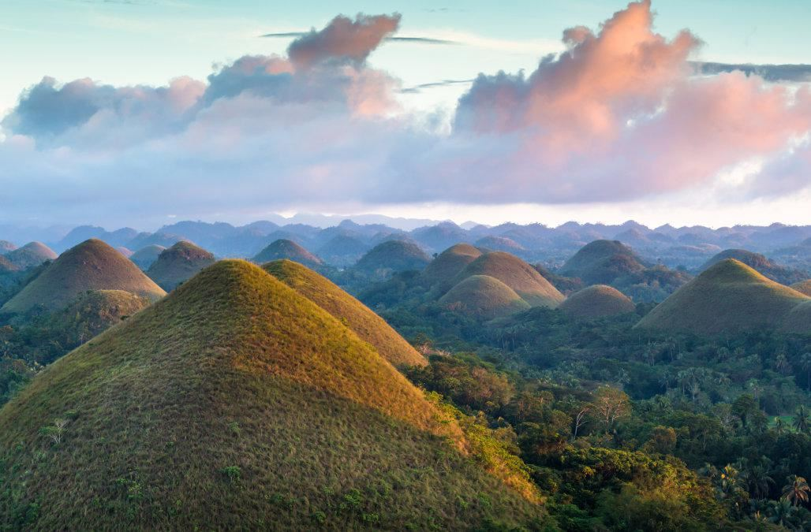
Chocolate Hills
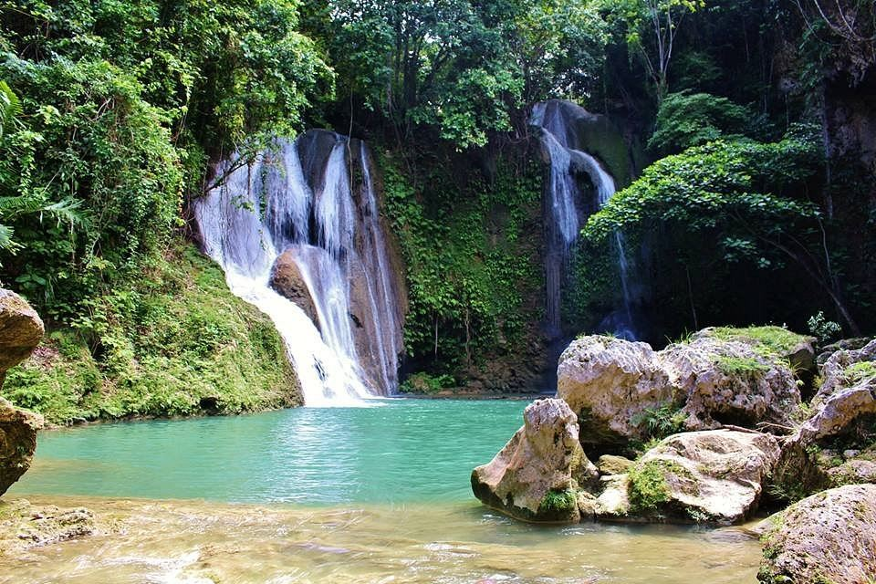
Pahangog Twin Falls
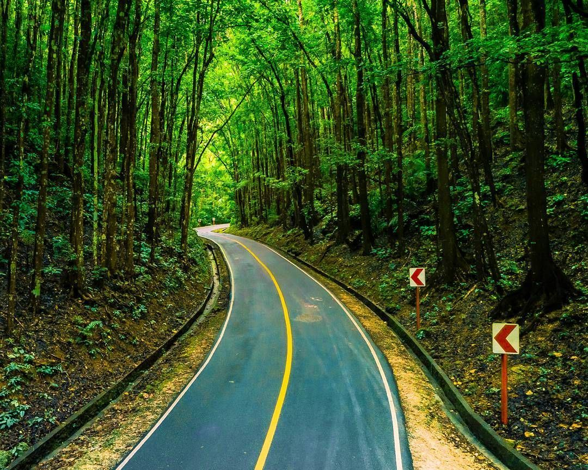
Manmade Forest

Bamboo Hanging Bridge
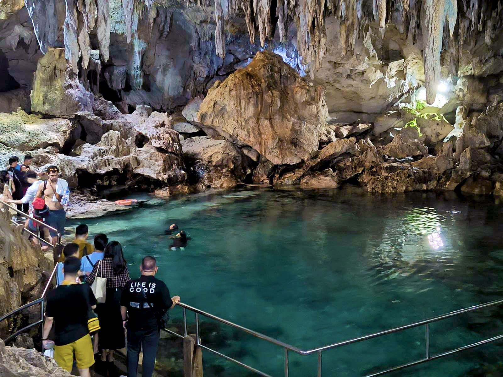
Hinagdanan Cave
South Farm

Loboc River Cruise

Pangas Falls
Taytay Hills

Napaling Reef

Sea of Clouds
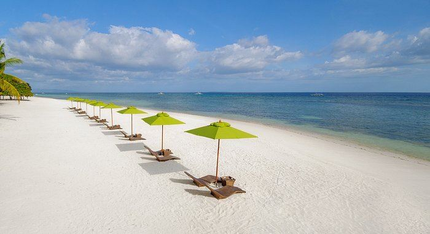
South Palms

Virgin Island
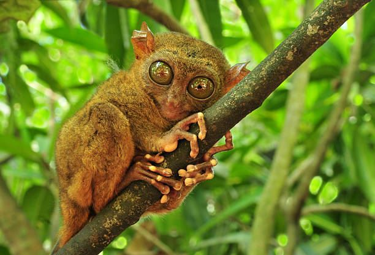
Tarsier
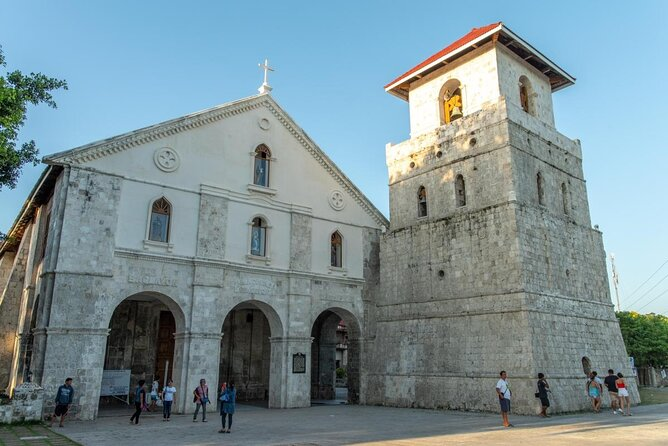
Baclayon Church

Butterfly Sanctuary

St. Joseph Cathedral Church

Blood Compact Shrine

Firefly Watching Night Cruise
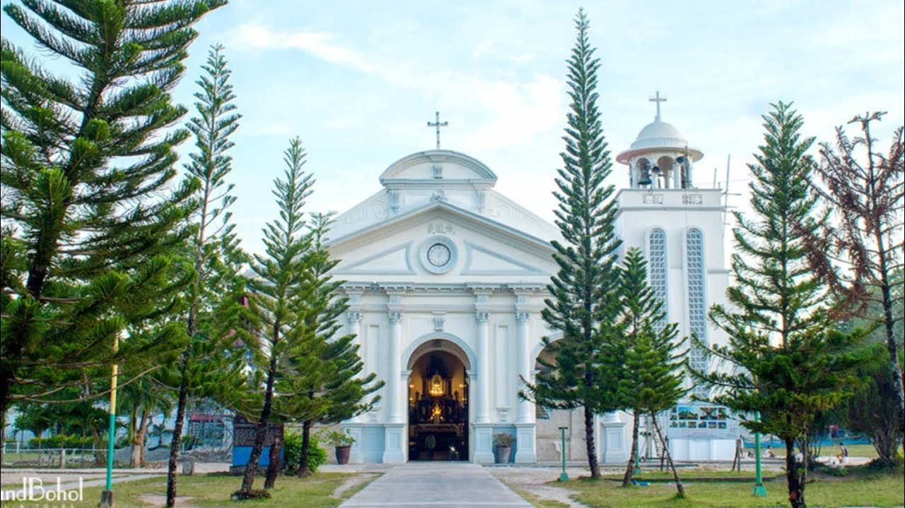
San Agustine Panglao Church
Anda White Beach